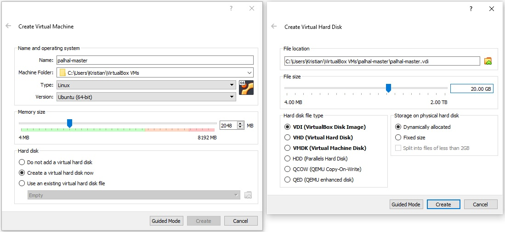
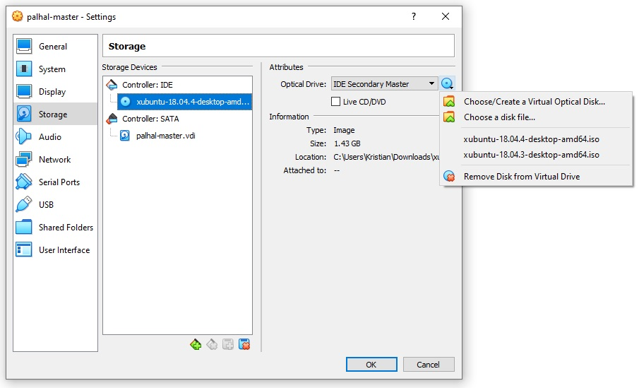
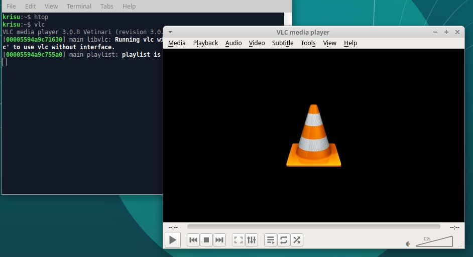

Hello Salt!
08.04.2020, Kristian KoponenTehtävänanto
Palvelinten hallinta H1
Käytetyt laitteet
Windows 10
| Prosessori: | Intel(R) Core(TM) i5-2500K @ 3.30Ghz |
|---|---|
| Keskusmuisti: | 8GiB DDR3 |
| Näytönohjain: | Nvidia GTX 970 |
| Käyttöjärjestelmä: | Windows 10 64-bit |
VirtualBox 6.1
xubuntu 18.04.4 amd64 ISO
VirtualBox
VirtualBox
Tehtävää ja kurssia varten aion käyttää virtuaalikonetta VirtualBoxin avulla.
Aloitetaan luomalla uusi virtuaalikone VirtualBox 6.1:ssä. Käytän virtuaalikoneen luomiseen Tero Karvisen remote learning tools -ohjeissa määriteltyjä asetuksia.
Avataan luodun koneen asetukset ja laitetaan viimeisin xubuntu LTS version (18.04.4) -levykuva virtuaalikoneeseen.
Xubuntun asennus
Käynnistetään kone. Koneen käynnistyttyä valitaan "Try Xubuntu". Työpöydälle päästyä voidaan asentaa Xubuntu koneelle klikkaamalla työpöydällä "Install Xubuntu 18.04.4 LTS". Käytetään seuraavia asetuksia.
- Welcome
- English
- Keyboard layout
- Finnish
- Updates and other software
- ✓ Download updates while installing Xubuntu
- ✓ Install third-party software for graphics and Wi-Fi hardware and additional media formats
- Installation type
- Erase disk and install Xubuntu
- Where are you?
- Helsinki
- Who are you?
Käyttöjärjestelmällä menee tovi asentua. Käynnistetään tämän jälkeen virtuaalikone uudestaan.
VirtualBox Guest Additions
Jotta VirtualBoxin käyttö olisi mukavampaa, eli ikkunan koko on responsiivinen ja tiedon siirto isäntäkoneen ja virtuaalikoneen välillä on helpompaa, on käytettävä Guest Additionsia. Valitaan VirtualBoxin ylävalikosta "Devices" ja Guest Additions CD image
Avataan terminaali ja asennetaan tarvittavat lisäosat.
$ sudo apt-get update
$ sudo apt-get -y install linux-headers-$(uname -r) build-essential dkms virtualbox-guest-dkms
...
$ cd /media/krisu/VBox_GAs_6.1.4/
$ sudo ./VBoxLinuxAdditions.runKäynnistetään jälleen virtuaalikone uudelleen. Nyt ikkunan kokoa voi muokata, mutta yhteistä leikepöytää ei löydy. Klikataan "Devices" ja "Shared clipboard". Asetetaan se kaksisuuntaiseksi, eli "Bidirectional". Sama tehdään kohdassa "Drag and Drop".
Copy-paste ei vieläkään toimi. Vietän aikaa hakukoneen parissa.
Löysin keskustelulangan VirtualBoxin foorumeilta. Täältä ilmenee, että VBox Guest Additions 6.1.4 päivitys on rikkonut copy-paste toiminnon.
Kyseisestä langasta löytyy myös nopeat ohjeet vanhemman version asentamiseen.
$ sudo apt-get remove -y virtualbox-guest-x11
$ sudo apt-get remove -y virtualbox-guest-dkms
$ sudo apt-get remove -y virtualbox-guest-utils
$ reboot
$ wget https://download.virtualbox.org/virtualbox/6.1.2/VBoxGuestAdditions_6.1.2.iso
$ sudo mkdir /media/iso
$ sudo mount VBoxGuestAdditions_6.1.2.iso /media/iso -o loop
$ sudo /media/iso/VBoxLinuxAdditions.run
$ rebootTämän tehtyä copy-paste toimii isäntäkoneen ja vieraskoneen välillä.
Asenna Salt
Asenna Salt ja siihen uusi orja. Voit tehdä ne esimerkiksi uudelle virtuaalikoneelle, niin pääset kokeilemaan puhtaalta pöydältä.
Salt on python-pohjainen työkalu, jolla voidaan kontrolloida useita tietokoneita kerralla master/slave -periaatteella, jossa master-kone käskyttää slave-koneita.
Seuraavassa vaiheessa käytän apuna Tero Karvisen Salt Quickstart -ohjeita.
Asennus
Päivitetään paketinhallinta ja asennetaan Saltin master-paketti.
$ sudo apt-get update
$ sudo apt-get install salt-master -yEi välttämätöntä, mutta harjoituksen vuoksi käynnistetään palomuuri ja tehdään Saltin käyttämille porteille tarvittavat reiät.
$ sudo ufw allow 4505/tcp
$ sudo ufw allow 4506/tcp
$ sudo ufw enableAsennetaan myös slave-paketti (aka 'minion').
$ sudo apt-get install salt-minion -yKatsotaan valmiiksi koneen sisäinen IP-osoite ja käydään muokkaamassa minion-tiedostoa.
$ hostname -I
10.0.2.15
$ sudoedit /etc/salt/minionTarvittava tieto on masterin sijainti. Slave käyttää oletuksena koneen hostnamea id:nä, mutta jokaisella slave-koneella on oltava yksilöllinen nimi, joten se on myös hyvä määritellä. Lisätään tiedoston alkuun.
master: 10.0.0.15
id: wingsTallennetaan ja käynnistetään minion uudelleen.
$ sudo systemctl restart salt-minon.serviceNyt masterin on hyväksyttävä slave-avain.
$ sudo salt-key -A
The key glob '*' does not match any unaccepted keys.Tuli virhe. Tarkastellaan lokista mitä kävi.
$ tail -20 /var/log/syslog
...
Apr 8 00:18:07 wings salt-minion[7324]: [ERROR ] Error while bringing up minion for multi-master. Is master at 10.0.0.15 responding?
...Tästä huomaan, että hostname on kirjoitettu väärin.
master: 10.0.2.15
id: wingsEli siis, nyt masterin on hyväksyttävä slave-avain.
$ sudo systemctl restart salt-minion.service
$ sudo salt-key -A
The following keys are going to be accepted:
Unaccepted Keys:
wings
Proceed? [n/Y] Y
Key for minion wings accepted.Kokeilu
Testataan tässä vaiheessa eri komennoilla.
$ sudo salt '*' cmd.run 'whoami'
wings:
root
$ sudo salt '*' cmd.run 'hostname -I'
wings:
10.0.2.15
$ sudo salt '*' pkg.install tree
wings:
----------
tree:
----------
new:
1.7.0-5
old:
$ tree
.
├── Desktop
├── Documents
├── Downloads
├── Music
├── Pictures
├── Public
├── Templates
├── VBoxGuestAdditions_6.1.2.iso
└── Videos
8 directories, 1 filePäätellään että Salt toimii.
Hei, maailma. (.sls)
Tee saltille idempotenssi hei maailma (siis tiedostosta, foo.sls)
Edellisessä harjoituksessa annettiin yksittäisiä komentoja slave-koneille kerrallaan, mutta Salt mahdollistaa myös useiden tekstitiedostoon tallennettujen toimintojen toteuttamisen.
Käytän tämän harjoituksen apuna Tero Karvisen Salt states -ohjeita.
Tilan luonti
Saltin master-konfiguraatiossa /srv/salt/master määritelty palvelin kansio on /srv/salt/. Luodaan ja siirrytään kyseiseen kansioon.
$ sudo mkdir -p /srv/salt/
$ cd /srv/salt/Luodaan tila-tiedosto (state).
$ sudoedit /srv/salt/hello.sls/tmp/hellosalt.txt:
file.managed:
- source: salt://hellosalt.txt"salt://" siis viittaa äsken luotuun /srv/salt/ -kansioon, joten luodaan hellosalt -tekstitiedosto samaan kansioon.
$ sudoedit /srv/salt/hellosalt.txtHello Salt! t: masterTilan levitys
Tila voidaan levittää komennolla
$ sudo salt '*' state.apply helloJossa '*' on kohde, johon se levitetään id:n perusteella. Tähti (*) merkitsee kaikkia koneita. Tehdään tämä ja testataan.
$ sudo salt '*' state.apply hello
wings:
----------
ID: /tmp/hellosalt.txt
Function: file.managed
Result: True
Comment: File /tmp/hellosalt.txt updated
Started: 01:26:32.242463
Duration: 36.376 ms
Changes:
----------
diff:
New file
mode:
0644
Summary for wings
------------
Succeeded: 1 (changed=1)
Failed: 0
------------
Total states run: 1
Total run time: 36.376 ms$ cat /tmp/hellosalt.txt
Hello Salt! t: masterVaihtoehtoinen ja parempi tapa on luoda top.sls -tiedosto, joka levittää valitut tilat kaikkiin tai yksittäisiin slave-koneisiin automaattisesti. Muokataan hellosalt -tekstitiedostoa.
$ sudoedit /srv/salt/hellosalt.txtHello again, Salt! t: masterKokeillaan.
$ sudoedit /srv/salt/top.slsbase:
'*':
- hellotop.sls -tiedosto levittäytyy siis automaattisesti, mutta odotuksen säästämiseksi se voidaan levittää samantien komenolla
$ sudo salt '*' state.highstate
wings:
----------
ID: /tmp/hellosalt.txt
Function: file.managed
Result: True
Comment: File /tmp/hellosalt.txt updated
Started: 01:43:40.789253
Duration: 67.446 ms
Changes:
----------
diff:
---
+++
@@ -1 +1 @@
-Hello Salt! t: master
+Hello again, Salt! t: master
Summary for wings
------------
Succeeded: 1 (changed=1)
Failed: 0
------------
Total states run: 1
Total run time: 67.446 ms$ cat /tmp/hellosalt.txt
Hello again, Salt! t: master
Lopputulos
Tilan levittäminen onnistui kummallakin tavalla. Päätellään että toimii.
Tietoa koneesta.
Kerää tietoa koneesta saltin avulla (grains.items)
"Grains" on rajapinta (interface), jolla voidaan hakea tietoa käyttöjärjestelmästä, domainista, IP-osoitteesta, kernelistä, muistista ja monesta muusta järjestelmätiedosta.
Haetaan tietoa esim. prosessorista, käyttöjärjestelmästä ja kernelistä.
$ sudo salt '*' grains.items|grep -A 3 cpu_model;sudo salt '*' grains.items|grep -A 3 'os:';sudo salt '*' grains.items|grep -A 1 kernel
cpu_model:
Intel(R) Core(TM) i5-2500K CPU @ 3.30GHz
cpuarch:
x86_64
os:
Ubuntu
os_family:
Debian
kernel:
Linux
kernelrelease:
5.3.0-46-generic
Muu tila
Kokeile jotain toista tilaa kuin file.managed. Tärkeitä ovat pkg.installed, file.managed, service.running, file.symlink, user.present, group.present. Ohjeita saa esim 'sudo salt kissa sys.state_doc pkg.installed|less'
Muokataan top -tiedostoa.
$ sudoedit /srv/salt/top.slsbase:
'*':
- hello
'wings':
- installsLuodaan uusi tiedosto pakettien asennuksille.
$ sudoedit /srv/salt/installs.slshtop:
pkg.installed
vlc:
pkg.installedAjetaan tila ulos.
$ sudo salt '*' state.highstate
wings:
----------
ID: /tmp/hellosalt.txt
Function: file.managed
Result: True
Comment: File /tmp/hellosalt.txt is in the correct state
Started: 02:55:32.225202
Duration: 56.521 ms
Changes:
----------
ID: htop
Function: pkg.installed
Result: True
Comment: The following packages were installed/updated: htop
Started: 02:55:36.945838
Duration: 26185.008 ms
Changes:
----------
htop:
----------
new:
2.1.0-3
old:
----------
ID: vlc
Function: pkg.installed
Result: True
Comment: The following packages were installed/updated: vlc
Started: 02:56:03.142783
Duration: 29011.886 ms
Changes:
# ...
# (VLC:n asennuksesta huomattavan paljon tulostetta pluginien ja koodekkien vuoksi)
# ...
Summary for wings
------------
Succeeded: 3 (changed=2)
Failed: 0
------------
Total states run: 3
Total run time: 55.253 s
Koneella toimii htop ja VLC.
(Lisätty puuttuva kuva 09.04.2020)
Lähteet ja materiaalit
http://terokarvinen.com/2020/configuration-managment-systems-palvelinten-hallinta-ict4tn022-spring-2020/
http://terokarvinen.com/2020/remote-learning-tools-for-my-courses/
http://terokarvinen.com/2018/salt-quickstart-salt-stack-master-and-slave-on-ubuntu-linux
https://docs.saltstack.com/en/latest/ref/states/all/salt.states.pkg.html